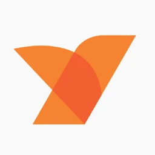

01
Ton Jellyfin pour tes potes, et rien d'autre
Tu crées un groupe « Amis » et une règle vers ton serveur Jellyfin : tes amis regardent tes films, sans voir ton NAS ni tes caméras.
Groupe Amis→Règle→Jellyfin

Le réseau privé open source de A à Z, serveur compris : tu relies tes appareils comme avec Tailscale, mais c'est toi qui héberges tout et qui décides qui accède à quoi.

NetBird relie tes appareils (PC, téléphone, NAS, serveurs) dans un réseau privé chiffré avec WireGuard. Les appareils se parlent directement quand c'est possible ; sinon, un relais prend le relais sans pouvoir lire le trafic. La différence avec Tailscale : le serveur central (liste des appareils, utilisateurs, règles d'accès) est open source et tu peux l'héberger toi-même. Tu gères tout depuis un tableau de bord web : groupes, règles « qui peut joindre quoi », DNS privé, routes vers ton réseau local. Plus sécurisé que Tailscale ? Pas forcément : le chiffrement est le même, tu gagnes en contrôle, mais la sécurité du serveur devient ton affaire.
Tu crées un compte (Google, Microsoft, GitHub ou e-mail) et NetBird héberge le serveur central pour toi. Gratuit jusqu'à 5 utilisateurs et 100 machines. Pratique pour tester avant d'héberger.
Pour testerLe script officiel installe tout avec Docker en quelques minutes : il faut une machine Linux (1 processeur, 2 Go de mémoire), un nom de domaine, et les ports 80 et 443 (TCP) et 3478 (UDP) joignables depuis Internet. Un VPS à quelques euros par mois suffit.
Le vrai intérêtApplis Windows, Mac, Linux, iPhone, Android, Android TV et Apple TV ; paquets pour Synology, TrueNAS, pfSense, OPNsense, MikroTik, OpenWRT, Proxmox et Raspberry Pi. Sous Linux : curl -fsSL https://pkgs.netbird.io/install.sh | sh, puis netbird up.
OfficielTu crées un groupe « Amis » et une règle vers ton serveur Jellyfin : tes amis regardent tes films, sans voir ton NAS ni tes caméras.
Home Assistant, Immich, ton tableau de bord : tout reste privé, mais tu l'ouvres de partout depuis ton téléphone, avec un nom simple grâce au DNS privé.
Un seul appareil chez toi sert de passerelle (route réseau) : ton imprimante, tes caméras ou ta box deviennent joignables sans installer NetBird dessus.
Depuis le tableau de bord, tu ouvres un terminal SSH ou un bureau à distance (RDP) sur une machine du réseau, avec des règles d'accès centralisées.
Connexion avec les comptes de l'équipe (Google, Microsoft ou ton propre fournisseur d'identité), double authentification, groupes par métier et vérification que chaque poste est à jour avant d'entrer.
Lancé sur GitHub en 2021 par une équipe berlinoise, NetBird est devenu l'alternative open source la plus complète à Tailscale, serveur compris. L'entreprise est financée (série A de 10 millions de dollars en janvier 2026) et compte des clients comme Sport Alliance, netgo ou Signicat. Parmi ses premiers investisseurs : le champion du monde de football Mario Götze.
Version 0.81.4 publiée le 24 octobre 2026 ; nouvelles versions plusieurs fois par mois.
GitHub affichait environ 30 200 étoiles et 1 800 forks le 15 novembre 2026 ; communauté active sur Slack, Discord et GitHub Discussions.
Tout peut tourner chez toi, serveur compris, avec un code entièrement ouvert ; trafic chiffré de bout en bout. Des mesures d'usage anonymes existent mais se désactivent.
Startup financée qui vit du cloud payant et des licences entreprise ; la version auto-hébergée reste gratuite et sans limite, mais quelques fonctions avancées sont réservées aux offres payantes.
Cinq ans d'existence et des clients en entreprise, mais toujours en versions 0.x, avec des changements fréquents (fournisseur d'identité intégré depuis la 0.62).
Comment on note : 5 critères notés sur 5, vérifiés sur GitHub (dépôt et versions), la documentation officielle (auto-hébergement, licences, tarifs) et la presse spécialisée le 15 novembre 2026. La note sur 10 est la moyenne ramenée sur 10.
Bon pour : Tout héberger toi-même, serveur compris, avec des règles d'accès fines
Bon pour : Tout relier en 2 minutes, sans serveur à gérer
Bon pour : Garder les applis Tailscale sans dépendre de leur serveur
Bon pour : Un petit réseau perso de moins de 10 appareils
Bon pour : Ouvrir des services web à des proches, sans serveur à gérer
Héberger le serveur NetBird, c'est en assumer la sécurité : mets-le à jour et sauvegarde-le régulièrement.

Chaque vidéo RepoPop t'explique un dépôt GitHub utile en moins d'une minute, avec son kit comme celui-ci.